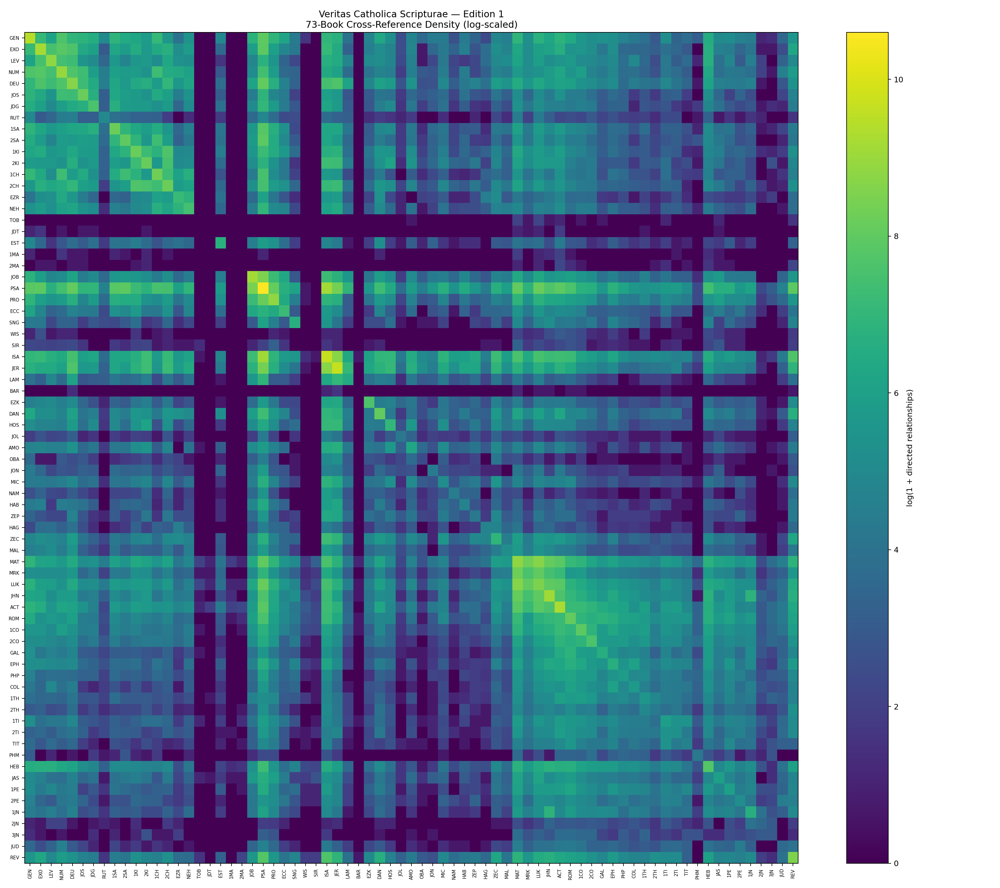
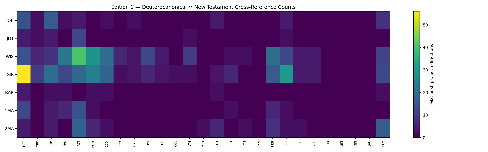

Website Edition 1.8.0
Veritas Catholica Scripturae
The Catholic 73-Book Scripture Cross-Reference Concordance
A source-reconciled research interface built from established cross-reference projects, with provenance and scholar-review boundaries kept visible where the Catholic truth is found in Scripture.
Explore the complete Catholic canon
73-Book Explorer
All 46 Old Testament and 27 New Testament books, organized by Catholic biblical grouping. Select a tile to inspect its verified outgoing relationships.
Catholic-specific
Deuterocanon ↔ New Testament
Explore 701 mapped relationships. These are displayed with their Edition 1 source and verification status; Level R items remain explicitly marked for scholar review.
Unified search
Unified Evidence Search
Search once across Scripture, VCS Study Topics, historical Source Library records, Timeline events, and official free Ignatius Catholic Study Bible study resources. Results remain grouped by evidence type so provenance stays visible.
Lookup
Verse relationship search
Enter a canonical reference such as MAT.5.3, WIS.2.18, or SIR.3.18. The site loads only the relevant book data.
New in 1.4.0
Study Topics + Catechism
Connect the Faith Notebook’s Scripture cheat sheet to official Catechism paragraph references and then open those verses inside the VCS relationship explorer.
Transparent by design
Research you can audit
VCS reconciles established cross-reference datasets while preserving provenance and separating source-supported relationships from items held for scholarly review. A cross-reference identifies a relationship worth studying; it does not by itself prove quotation, dependence, inspiration, typology, or doctrine.
Visual maps
See the network
Static Edition 1 visualizations complement the interactive explorer.


Edition 1.8.0 · Catholic Historical Continuity
See Scripture as a living architecture
Five complementary views reveal Scripture and salvation history across text, doctrine, and time. Constellation of Scripture expands from the 73-book galaxy into chapter-level relationships. Messianic Prophecy now includes a curated evidence map while preserving the larger traditional source list for review. Hover, focus, zoom, and compare without changing the underlying evidence.